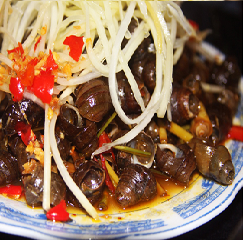
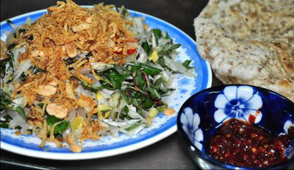
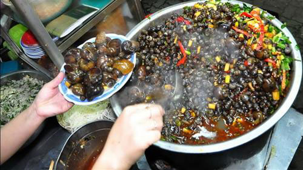
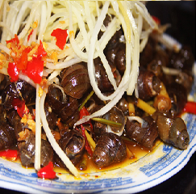
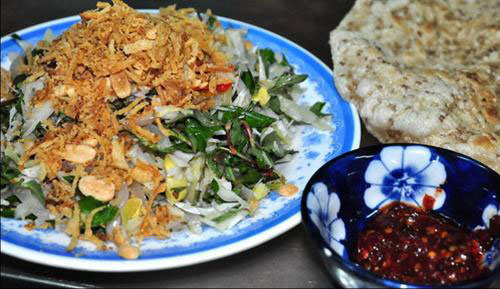
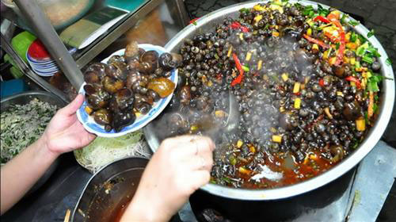

-
Ốc hút, mít trộn Đà Nẵng
Những món ăn chơi dân dã này chính là một nét riêng đặc biệt của Đà Nẵng. Đến Đà Nẵng bất cứ mùa nào trong năm, mỗi chiều sau khi tắm biển xong, rủ bạn bè thưởng thức một đĩa mít trộn hay ốc hút thì còn gì bằng. Mấy món "ăn chơi" dân dã này không biết từ bao giờ đã trở nên vô cùng quen thuộc với người dân Đà Nẵng, và bây giờ đang được biết đến như một nét ẩm thực vô cùng độc đáo ở đây. Ngồi bên bạn bè, trò chuyện rôm rả, thưởng thức mấy món ăn quê, mới nhận ra đôi khi hạnh phúc thật giản đơn.
Cây mít mọc ở nhiều nơi ở Đà Nẵng, trái có vị rất đậm và thơm, món mít trộn cũng vì thế mà càng thêm đậm đà. Người Đà Nẵng cũng như người dân sống trên dải đất miền Trung vốn mộc mạc, chất phác, vì thế các món ăn cũng đơn giản, không cầu kỳ trong chế biến. Tuy vậy, vị tinh tế và đậm đà thì không chê vào đâu được. Món mít trộn là như vậy.
Với món mít trộn, nguyên liệu cơ bản là giống nhau, cũng từ trái mít non luộc chín vừa tới rồi xắt sợi hoặc xé tơi để trộn gỏi, nhưng các hàng quán “nhà giàu” thì trộn với thịt ba rọi hoặc tôm thẻ, nhìn món ăn sang trọng hơn. Nhưng có lẽ đúng món mít trộn chân chất xứ này thì phải là trộn với da heo xắt sợi, thêm đậu phộng giã dập, hành phi, nước mắm chua ngọt với ít rau răm và húng lủi. Tất cả trộn đều với nhau, tạo nên mùi thơm quyến rũ, màu sắc cũng thật bắt mắt. Ăn mít trộn thì không thể thiếu bánh tráng mè nướng giòn rụm. Bẻ một miếng bánh tráng, xúc một miếng mít trộn, cái giòn rụm của bánh tráng, vị bùi và ngọt của mít non, chút giòn sựt sựt của da heo, thêm vị thơm của đậu phộng, hành phi và chút cay cay của ớt, rau thơm… tất cả tạo nên một vị ngon không cưỡng được.
Đà Nẵng cũng là xứ nổi tiếng với món ốc xào xả ớt, mà người dân địa phương gọi dân dã là ốc út. Ốc miền Trung con nào con nấy nhỏ mà chắc thịt. Ốc gạo, ốc bươu, ốc đắng... nhiều vô số kể ở khắp nơi. Đem về ngâm thật sạch, rửa sạch rồi đợi ráo nước, đem xào với sả ớt, gia vị, công thức không có gì đặc biệt mà vị thì đậm đà khó quên. Có lẽ là do sự đậm đà vốn có trong cách thức chế biến món ăn của người Đà Nẵng đã tạo nên sự hấp dẫn cho món ăn
Món ốc hút đã trở thành quen thuộc với mọi người, nhất là các bạn trẻ và du khách phương xa. Rảnh rỗi, bạn bè rủ nhau đi "hút ốc", ngồi bên quán vỉa hè hút ốc bằng tay, miệng và tay dính màu ớt đỏ cay xè, ăn xong lâu rồi vẫn hít hà vị cay. Vậy mà vẫn thích. Sự đậm đà của sả, ớt và gia vị thấm vào từng con ốc tạo nên cái "sự ghiền" cho người ăn.
Đà Nẵng là một thành phố lớn ở miền Trung. Bên cạnh sự giàu có của hải sản và sự phong phú trong ẩm thực nơi đây, sự hấp dẫn của Đà Nẵng đôi khi đến từ những nét rất nhỏ, rất riêng và rất đặc biệt. Những món ăn chơi dân dã này chính là một trong những nét riêng đặc biệt đó. Bởi tôi đã vài lần nghe bạn bè rủ rê: Ghé Đà Nẵng chơi không? Tắm biển thỏa thích rồi làm đĩa mít trộn hay đĩa ốc hút cay xè cho đỡ nhớ.
.png) 
